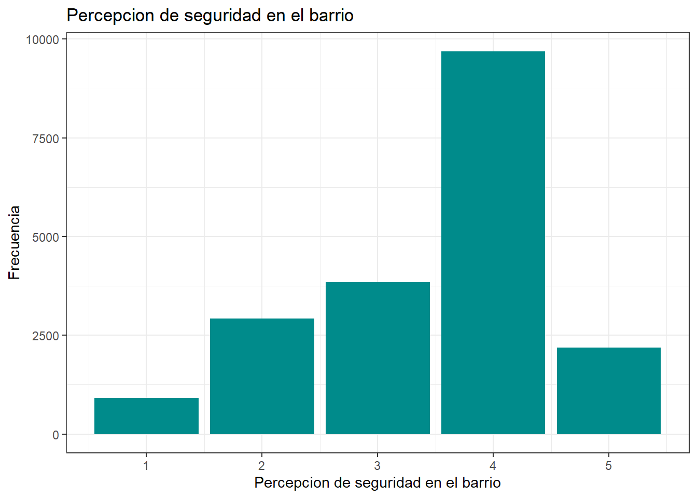

| r13_ideol_01 | n | Porcentaje |
|---|---|---|
| Derecha | 783 | 3.77 |
| Centro | 386 | 1.86 |
| Izquierda | 1022 | 4.92 |
| Ninguno | 3819 | 18.40 |
| NA | 14751 | 71.05 |
Percpecion de Inseguridad Segun Orientacion Politica
R para el análisis de datos
Introducción
En el presente trabajo se buscara analizar la percepción de inseguridad según la orientación política con la confianza en los medios, en el clima actual político Chileno donde la polarización aumenta más con los candidatos a presidente en futuras elecciones en una especie de precampaña muchos usan el tema de la seguridad como un elemento que debe atenderse con severidad y con celeridad, creemos que es importante preguntarse ¿Qué tanto incide en el percepciones de inseguridad según la orientación política y la confianza en los medios?
Para este caso, se usaran datos extraidas de la base de datos del ELSOC de la ola del
(Falta Ingresar Citas)
Variables
En esta caso se usaran las variables orientacion politica (R13_ideol_01), confianza en medios (c05_12) y percecion de Seguridad del barrio (t10)
Pero primero debemos cargar tanto los paquetes de los cuales aremos uso junto
Esto lo podemos repetir para la carga de la base de datos y el procesamiento de los datos.
Ahora con la base datos abierta procederemos a describr las variables que se usaran para este trabajo
Descripción de variables
En este caso, se seleccionaron las variables:
- r13_ideol_01: Sector idiologico con el que se identifica el encuestado
Ahora se hara una tablade frecuencias para esta variable categorica
- c05_12: Grado de Confianza: en los medios de comunicacion tradicionales
Percepcion de seguridad del barrio (x) <numeric>
# total N=20761 valid N=19602 mean=1.94 sd=36.86
Value | Label | N | Raw % | Valid % | Cum. %
-------------------------------------------------------------------------------
-999 | No Responde | 11 | 0.05 | 0.06 | 0.06
-888 | No Sabe | 14 | 0.07 | 0.07 | 0.13
-777 | Valor perdido por error tecnico | 0 | 0.00 | 0.00 | 0.13
-666 | Valor perdido por encuesta incompleta | 10 | 0.05 | 0.05 | 0.18
1 | Muy inseguro | 919 | 4.43 | 4.69 | 4.87
2 | Inseguro | 2919 | 14.06 | 14.89 | 19.76
3 | Ni seguro ni inseguro | 3843 | 18.51 | 19.61 | 39.36
4 | Seguro | 9696 | 46.70 | 49.46 | 88.83
5 | Muy seguro | 2190 | 10.55 | 11.17 | 100.00
<NA> | <NA> | 1159 | 5.58 | <NA> | <NA>- t10: Percepcion de seguridad del barrio
Percepcion de seguridad del barrio (x) <numeric>
# total N=20761 valid N=19567 mean=3.48 sd=1.03
Value | Label | N | Raw % | Valid % | Cum. %
-------------------------------------------------------------------------------
-999 | No Responde | 0 | 0.00 | 0.00 | 0.00
-888 | No Sabe | 0 | 0.00 | 0.00 | 0.00
-777 | Valor perdido por error tecnico | 0 | 0.00 | 0.00 | 0.00
-666 | Valor perdido por encuesta incompleta | 0 | 0.00 | 0.00 | 0.00
1 | Muy inseguro | 919 | 4.43 | 4.70 | 4.70
2 | Inseguro | 2919 | 14.06 | 14.92 | 19.61
3 | Ni seguro ni inseguro | 3843 | 18.51 | 19.64 | 39.25
4 | Seguro | 9696 | 46.70 | 49.55 | 88.81
5 | Muy seguro | 2190 | 10.55 | 11.19 | 100.00
<NA> | <NA> | 1194 | 5.75 | <NA> | <NA>igualmente se armara una tabla de descriptivos de las variables lineares para
=======================================
Statistic N Mean St. Dev. Min Max
---------------------------------------
c05_12 4,907 2.307 1.064 1 5
t10 19,567 3.476 1.026 1 5
---------------------------------------| r13_ideol_01 | Grado de confianza: Medios de comunicacion tradicionales |
Total | ||||
|---|---|---|---|---|---|---|
| Nada | Poca | Algo | Bastante | Mucha | ||
| Derecha | 130 | 162 | 181 | 53 | 6 | 532 |
| Centro | 84 | 87 | 86 | 21 | 7 | 285 |
| Izquierda | 234 | 239 | 183 | 48 | 16 | 720 |
| Ninguno | 668 | 679 | 674 | 218 | 76 | 2315 |
| Total | 1116 | 1167 | 1124 | 340 | 105 | 3852 |
| χ2=32.044 · df=12 · Cramer's V=0.053 · p=0.001 | ||||||


